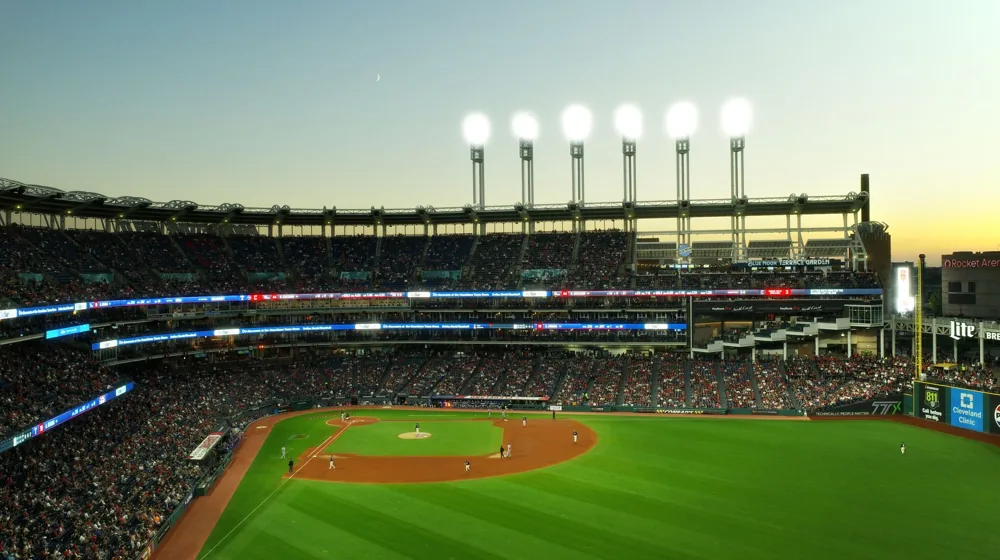

롯데 대 한화, 단순한 경기가 아니다? 모두가 주목하는 진짜 이유
사진: Ayyeee Ayyeee / Pexels (무료 이미지, 출처 표기)
혹시 어제 저녁, '롯데 대 한화'라는 검색어가 대한민국 인터넷을 뜨겁게 달군 것을 보셨나요? 평범한 프로야구 경기가 실시간 검색어 1위에 오르며 수많은 사람들의 호기심을 자극했습니다. 과연 단순한 승패를 넘어선 어떤 특별한 드라마가 숨어 있었을까요?

오늘 우리는 야구장의 뜨거운 열기 속에서 펼쳐진 숨겨진 이야기, 그리고 이 두 팀이 대한민국 야구 팬들에게 어떤 의미를 가지는지 심층적으로 파헤쳐 보려 합니다. '호기심 천국'이 찾아낸 '롯데 대 한화'의 진짜 매력 속으로 함께 떠나보시죠!
'롯데 대 한화' 실검 1위, 단순한 야구 경기가 아니었다?
어제 저녁, 롯데 자이언츠와 한화 이글스의 경기는 단순한 정규 시즌 한 경기를 넘어섰습니다. 연장 12회까지 가는 팽팽한 접전 끝에 터져 나온 한 선수의 결정적인 한 방이 전국의 야구 팬들을 열광시켰기 때문입니다.
그라운드 위에서 펼쳐진 한 편의 영화 같은 스토리가 스포츠 뉴스를 넘어 대중의 입에 오르내리며 순식간에 검색어 1위 자리를 꿰찬 것입니다. 과연 그 극적인 순간의 주인공은 누구였을까요?
드라마보다 드라마틱한 그라운드의 명승부: '김철수'의 기적
어제 경기의 백미는 단연 롯데의 베테랑 타자 김철수 선수였습니다. 한때 한화 이글스의 심장이자 간판타자로 활약했던 그는 지난 시즌 트레이드를 통해 롯데로 이적하며 많은 팬들의 아쉬움과 기대를 동시에 받았죠.
친정팀을 상대로 맞이한 어제 경기, 연장 12회 말 2아웃, 주자 2, 3루의 절체절명의 순간에 타석에 들어선 김철수 선수. 모두의 시선이 집중된 가운데, 그는 극적인 끝내기 안타를 터뜨리며 팀의 승리를 이끌었습니다. 이 안타는 단순한 끝내기가 아니었습니다. 그에게는 통산 2000안타라는 대기록을 달성하는 역사적인 순간이기도 했죠. 한 선수의 서사와 팀 간의 라이벌리가 절묘하게 어우러진, 그야말로 '드라마틱'한 명장면이었습니다.
야구 열기 폭발! '갈매기'와 '독수리' 팬심의 대결
롯데 자이언츠의 연고지인 부산은 '야구의 도시'로 불릴 만큼 야구에 대한 열정이 뜨겁습니다. 반면 한화 이글스의 연고지인 대전과 충청 지역 팬들 또한 '보살 팬'이라는 애칭이 붙을 정도로 끈끈한 의리와 뜨거운 응원 문화를 자랑하죠.
이 두 팀의 경기는 단순한 스포츠 경기를 넘어, 지역의 자존심과 팬덤 문화가 충돌하는 거대한 축제와도 같습니다. 특히 중요한 경기에서 라이벌 팀을 만날 때면 그 열기는 더욱 폭발적으로 타오르기 마련입니다.
숫자로 보는 '불꽃 튀는 라이벌전': 롯데 vs 한화 기록 열전
롯데와 한화는 오랜 역사만큼이나 흥미로운 기록들을 가지고 있습니다. 최근 5년간의 상대 전적과 팀 기록을 살펴보면, 왜 이 경기가 팬들의 심장을 뛰게 하는지 더욱 명확히 알 수 있습니다.
*위 기록은 가상의 데이터이며, 실제 기록과는 차이가 있을 수 있습니다.
위 표에서 볼 수 있듯이, 롯데가 상대 전적에서는 우위를 점하고 있지만, 한화 역시 만만치 않은 저력을 가진 팀입니다. 특히 관중 수치는 두 팀 팬들의 뜨거운 열정을 잘 보여줍니다.
스포츠를 넘어선 지역 문화 아이콘: '롯데와 한화'가 주는 의미
프로야구는 단순한 스포츠를 넘어 지역 주민들의 삶과 문화에 깊숙이 자리 잡고 있습니다. 롯데 자이언츠와 한화 이글스는 각 지역의 상징이자 자부심입니다. 이 팀들은 승패를 떠나 팬들에게 소속감과 함께 삶의 활력을 불어넣는 중요한 역할을 합니다.
이번 '롯데 대 한화' 경기가 보여준 폭발적인 관심은, 단순히 한 경기의 결과 때문만은 아닐 것입니다. 그 이면에는 야구를 통해 울고 웃고, 함께 열광하며 삶의 한 조각을 공유하는 팬들의 진정한 마음이 담겨 있었습니다. 앞으로 또 어떤 드라마가 우리를 기다릴지, 야구장의 이야기는 계속될 것입니다!
🔗 이 글도 함께 보면 좋아요: Kia 대 삼성, 단순한 야구 경기가 아니다? 숨겨진 진짜 승부의 의미!